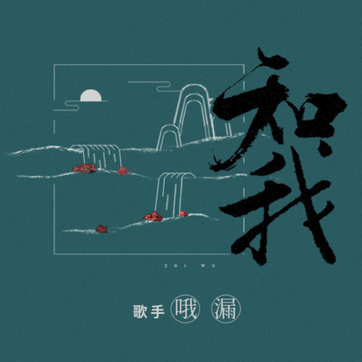

知我
歌手：国风堂 / 峨漏
专辑：《知我》原声带
245.3万
播放量
12.7万
收藏
5.2万
评论
全部评论
古韵千寻
1周前
作为国风音乐爱好者，这首歌真的让我惊喜。歌词很有古风韵味，又不失现代感，歌手的嗓音也很独特，把那种淡淡的忧愁和洒脱演绎得淋漓尽致。推荐给了身边所有喜欢国风的朋友。
深夜听歌人
1周前
深夜里听这首歌特别有感觉，安静的房间里只有这首歌在流淌，仿佛整个世界都安静下来了。想起了很多往事，有欢笑也有泪水，这大概就是音乐的魔力吧。
古风歌词控
2周前
逐字逐句分析了歌词，发现写得真的很用心：
"清风知我意，明月照我心" —— 用自然景象表达内心状态
"前路虽漫漫，我亦向前行" —— 表达了坚定的信念
"谁能知我，心事如锁" —— 点题之句，引人共鸣
这种将现代情感用古风表达的方式，真的很巧妙。
"清风知我意，明月照我心" —— 用自然景象表达内心状态
"前路虽漫漫，我亦向前行" —— 表达了坚定的信念
"谁能知我，心事如锁" —— 点题之句，引人共鸣
这种将现代情感用古风表达的方式，真的很巧妙。
听风的人
3天前
音乐旅人
回复@听风的人
2天前